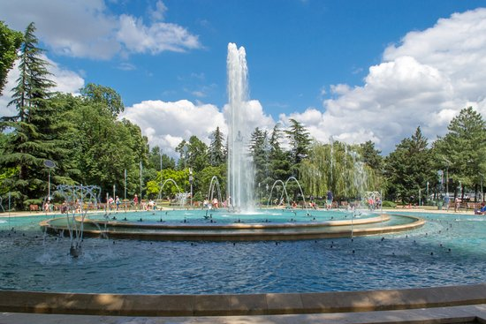
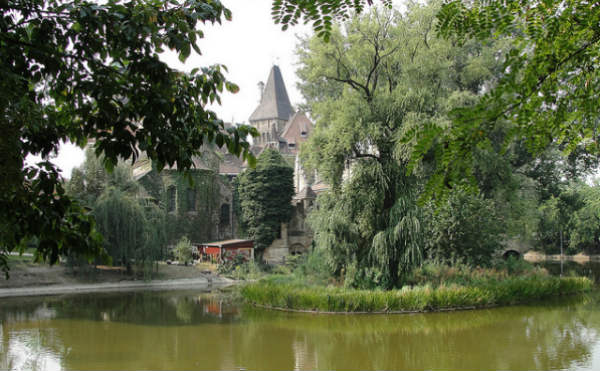
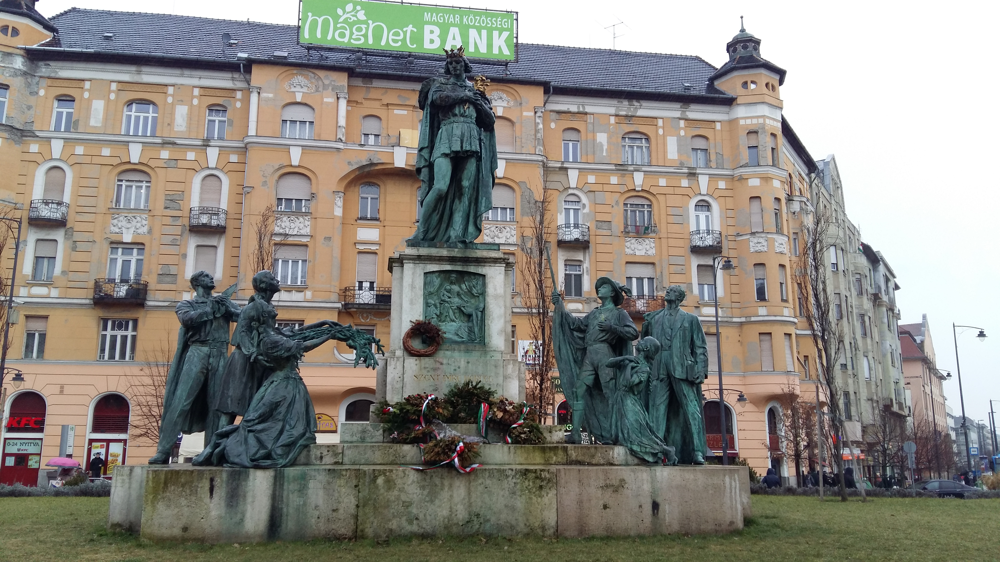
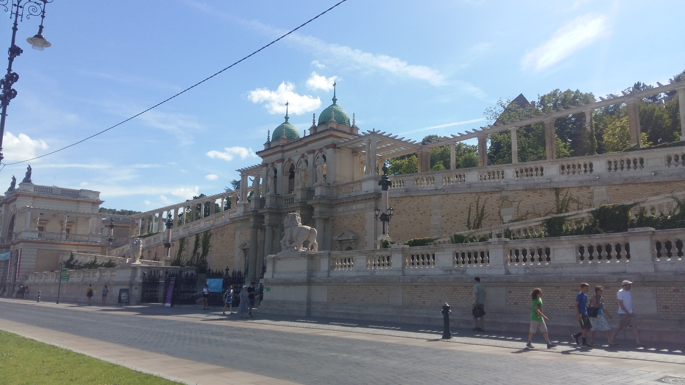
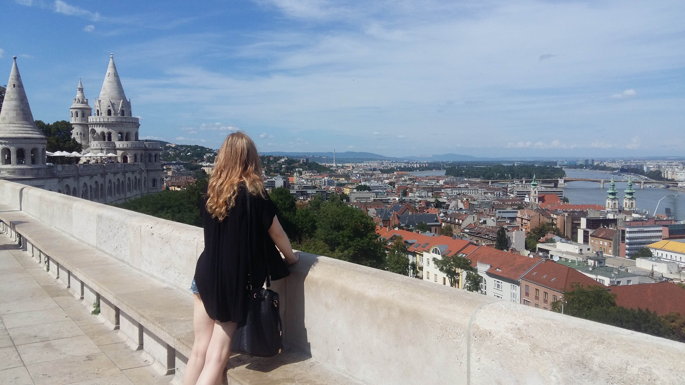
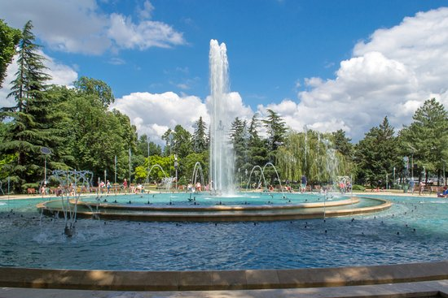
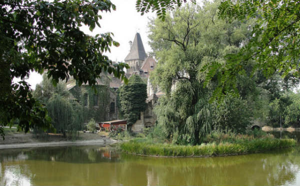
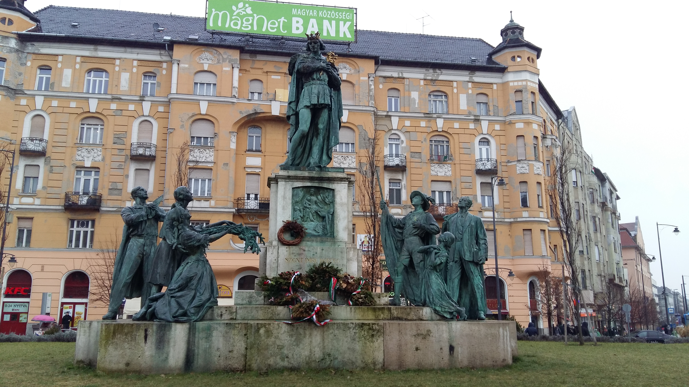
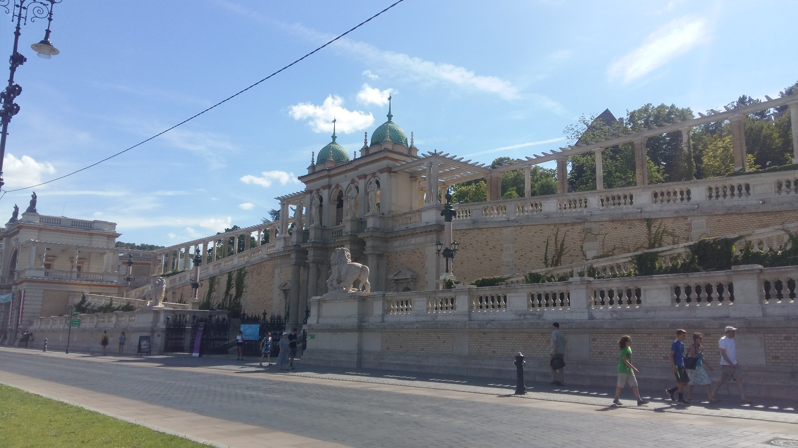
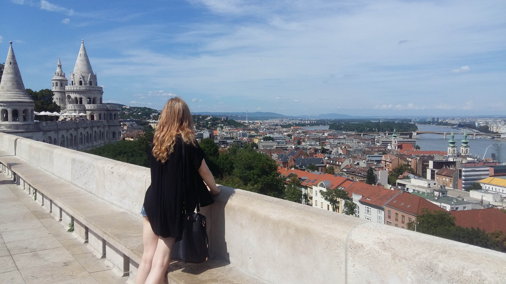

Why Budapest?
The Pearl of the Danube
The Polish writer and winner of the Prince of Asturias Award, Claudio Magris describes Budapest as the Pearl of the Danube after traveling through Europe. Hungary's capital is blessed with a bounty of art nouveau architecture, quirky ruin bars and gorgeous bathhouses replenished by mineral-rich hot springs.
The modern Budapest results from the amalgamation of two historic cities lying right opposite each other over the Danube river. Buda is the western (left) bank side, with the high hill atop which the Buda castle sits. Pest is the relatively flat eastern (right) bank side, with the Parliament, numerous other stately buildings, and busy streets retaining all their 19th century architectural heritage.
Things to do
Things to do and see
< >Fisherman's bastion
The Fishermen’s Bastion is a lookout located on the Castle Hill and is offering spectacular views to the Buda side of the city. The name comes from assuption that this part of the castle walls was protected by the fishermen, who lived under the walls in the so-called Fishtown or Watertown.
Széchenyi Thermal Baths
One of the largest thermal spring bath complex in Europe. Complex has indoor and outdoor pools, saunas, massage and facial facilities. The mineral-rich hot springs that feed the pools are believed to have therapeutic benefits.
Margaret Island
An island in the river Danube that runs through the city. Quiet walkways, flower gardens, romantic ruins and century-old trees make up this popular recreation spot located in the heart of Budapest.
Seventh District
District VII is the very heart of Budapest and houses the city’s Jewish Quarter. It has lively and colorful street and many bohemian style bars and cafes. The striking star of the district is the Great Synagogue, the largest in Europe and one of the biggest in the world.
Underground caves
More than two hundred caves are known under the Buda side of the town. However these caves also have a special place in the world because of their unusual thermal water based development. The hydrothermal caves of Budapest were created by the same thermal springs that supply the famous spas of the capital and the entire area is on the tentative list of UNESCO World Heritage Sites.
My photos of Budapest
 








